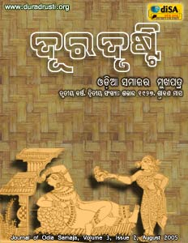
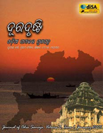

| |||
| DuraDrusti.Org - The Journal of Odia Samaja | |||
  | |||
| Volume 3, Issue 2; August 2005 | |||
Past Editions: | |||
 |  |  |  |
| Volume 1, August 2003 | Volume 2, January 2004 | Volume 3, August 2004 | Volume 3, Issue 1; January 2005 |
| DuraDrusti.Org - The Journal of Odia Samaja | |||
| Contact Duradrusti | Visit OdiaSamaja.Org | |||